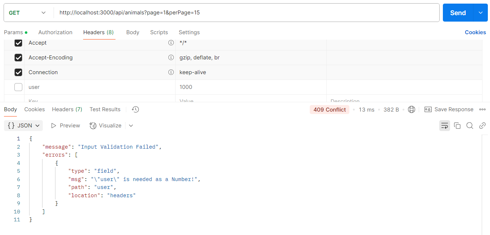
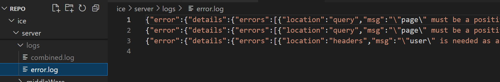

Logging and Input Validation
Logging
Install Winston package
Create logger utility. Sample is here .
Create logging middleware. Sample is here .
User logging middleware. Sample is here .
Input Validation
Install express-validator
Create validation middleware. Sample is here .
Validation middleware generates a ConflictError object, which will be processed by errorHandler middleware.
Create ConflictError class. Sample is here .
Create errorHandler middleware. Sample is here .
Add validation rules to animal controller. Sample is here .
Use validation middleware on animal routes. Sample is here .
Submission
Run express server
Run PostMan
Submit PostMan screenshots.

Submit log files.
